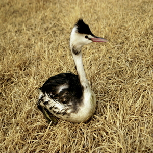
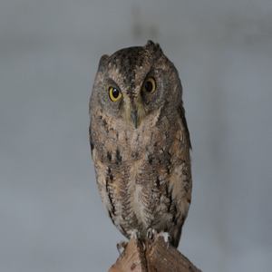
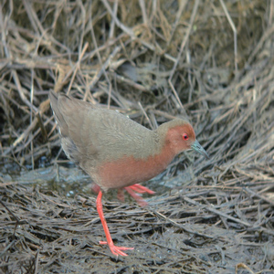
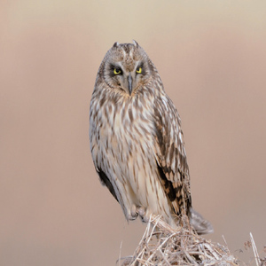
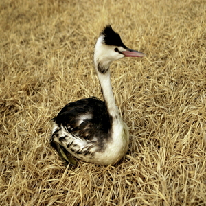
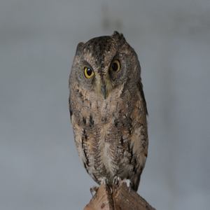
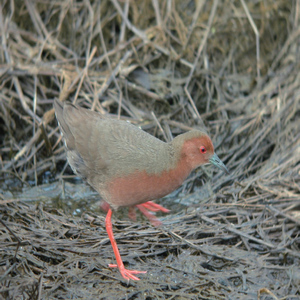
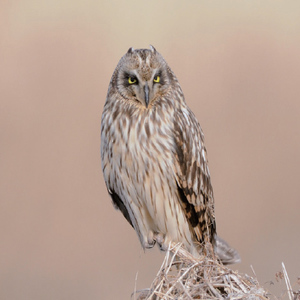

분류
가창오리
겨울철새다. 낮에는 저수지, 강 등의 습지에서 휴식을 취하고 밤에 주변 농경지로 이동한다. 다른 오리류와 달리 수만에서 수십만 마리의 대 집단을 이루어 함께 행동한다. 몸길이는 39-43cm이다. 수컷은 노란색과 녹색의 얼굴 무늬가 큰 특징이며, 암컷은 부리 기저부의 흰색 반점 무늬로 근연종의 암컷과 구별된다. 월동 초기에는 천수만 지역에 머물다가 먹이 자원을 찾아 남쪽으로 이동하면서 금강호, 동림저수지, 영암호, 고천암호, 주남저수지, 낙동강 등지에서 겨울을 나고, 다음 해에 북쪽으로 이동한다. 지구상에 서식하는 대부분의 개체들이 우리나라에서 월동한다. 러시아 예니세이강에서 시베리아 동부까지 지역에서 번식한다.
개구리매
주로 개활지에 서식한다. 몸길이는 47-55cm, 체중은 370-780g이다. 수컷은 몸 윗면이 짙은 회갈색이며, 암컷은 줄무늬가 있는 머리 부분을 제외하고는 몸 전체가 밝은 갈색이다. 저습지, 호수가, 넓은 갈대밭 같은 습지 또는 논, 초지 등 개활지에 살면서 물고기, 뱀, 개구리, 물새, 설치류 따위를 잡아먹으며 갈대밭과 같은 습지의 지상에 둥지를 튼다. 9월부터 이듬해 5월까지 많은 곳에 도래한다. 매년 규칙적으로 도래하진 않지만 천수만, 낙동강 하구 및 해남 간척지에서 비교적 규칙적으로 관찰된다. 시베리아 동남부, 몽골, 우수리, 사할린 지역에서 중국 동북부 및 일본 북부까지 분포한다. 한국, 일본 남부 지역, 중국 남부 및 동남아 등지에서 월동한다. 전 세계적으로 멸종 위협에 처해 있지는 않으나 현존 개체수 및 개체군 동태에 관한 자료가 매우 부족한 실정이다. 비슷한 서식지에 도래하는 잿빛개구리매에 비해 도래 집단의 규모는 작은 편으로 어느 지역에서나 잿빛개구리매에 비해 관찰 개체수는 적은 편이다
검은목두루미
보기 드문 겨울철새 또는 통과철새이다. 몸길이는 114cm가량이다. 몸은 전체적으로 회색이다. 이마에서 눈앞을 지나 목의 앞쪽으로 검은색이며, 눈의 뒤에서 목의 뒤쪽으로 흰색이다. 이마에서 머리꼭대기까지 붉은색의 점이 있다. 날 때 날개덮깃의 회색과 날개깃의 검은색은 뚜렷한 대비를 이룬다. 주로 다른 두루미류가 도래하는 철원, 강화도, 김포, 서산간척지, 구미, 순천만 등 지역에서 1-2마리가 관찰된다. 흑두루미와 사이에서 잡종이 지속적으로 보고되고 있으며, 국내에서도 잡종이 관찰된 사례가 자주 있다. 실제로 검은목두루미의 관찰 사례보다 잡종의 관찰 사례가 더 흔하다. 습지, 농경지, 하천, 강, 저수지, 강 하구, 해안에 도래하며, 먹이는 벼 낟알, 초본류, 구근 등 식물성 먹이와 함께 무척추동물, 양서류, 어류, 곤충 등을 잡아먹는다. 4-5월에 33일간 포란하여 두 마리를 산란한다. 천수만, 한강 하구, 순천만 등의 지역에서 월동하는 것이 확인된다. 유라시아 대륙에 폭넓게 분포한다.
노랑때까치
한국 전역에서 번식하는 여름새이다. 몸길이 20cm이다. 수컷 겨울깃의 윗면은 회갈색, 옆구리와 몸 아랫면은 옅은 황갈색, 부리의 털과 이어지는 눈선은 검은색이며, 눈썹 선은 잿빛 흰색이다. 뺨, 턱 밑, 멱은 흰색이다. 부리, 눈, 다리는 검은색이다. 평지의 관목 숲에 서식한다. 도시와 교외, 농촌과 구릉, 경작지 등 도처에서 흔히 눈에 띈다. 암수가 함께 생활한다. 번식이 끝나면 가족이 함께 생활한다. 나뭇가지 위에 풀이나 나무껍질로 밥그릇 모양 둥지를 만든다. 산란기는 5월 하순-6월이며, 한배의 알은 4-7개이다. 곤충류를 주로 먹는다. 중국(동부, 북동부), 일본, 한국 전역에서 번식하고 동남아시아와 인도에서 월동한다.
말똥가리
몸길이는 수컷이 52㎝, 암컷이 56㎝이고 날개는 122-137㎝이다. 날 때 날개 아랫면의 암갈색 점이 특징적으로 보인다. 개체에 따라 깃털 변이가 심하지만, 일반적으로 아랫면은 전체적으로 밝은 갈색으로 보이며, 배와 옆구리, 날개 끝은 어두운 갈색이다. 몸의 윗면은 균일한 어두운 갈색이다. 어미새의 눈은 어두운 갈색이지만, 어린새는 노란색을 띤 갈색이다. 양쪽 날개를 약간 들어 각이 완만한 V자형으로 날며, 정지비행도 한다. 숲의 가장자리, 경작지, 산림 등 다양한 서식지에 서식한다. 주 먹이는 설치류이지만 곤충류, 양서파충류, 조류도 잡아먹는다. 알은 대개 2-4개를 낳으며, 포란기간은 33-38일, 육추기간은 50-60일이다. 유라시아대륙과 아프리카대륙에 폭넓게 분포한다. 한국 전역에 도래하는 흔한 통과철새이며 겨울철새이다. 9-10월부터 서해안 도서 지역에서 남하하는 무리를 볼 수 있다. 12월부터 이듬해 2월까지 전국적으로 월동하는 개체를 쉽게 볼 수 있으며, 북상하는 개체를 5월까지 관찰할 수 있다.
밀화부리
한국의 전역에 도래하는 여름새이다. 수컷은 머리와 뺨, 위꼬리덮깃과 꼬리깃은 검은색, 목과 어깨, 등은 잿빛이 도는 갈색, 허리는 잿빛이다. 옆구리는 누런 갈색이다. 배는 흰색에 가깝다. 암컷의 머리는 검은색이 아니고 등과 같은 잿빛 갈색이다. 부리는 엷은 주황색이며 끝이 검은색이다. 도시 주변, 교외의 숲에서 흔히 번식한다. 번식기에는 암수 1쌍이 함께 생활하나 그 이외는 무리를 이루어 생활한다. 낙엽활엽수림의 나뭇가지 위에 밥그릇 모양의 둥지를 만든다. 산란기는 5-6월이고, 한배의 알은 4-5개이다. 주로 식물의 종자를 먹는다. 아무르 지역 남부, 우수리 지역, 만주, 한국에서 번식하고 일본, 중국 남부에서 월동한다. 숲 서식지의 훼손 등으로 도래 개체수가 감소하고 있다
붉은발도요
봄과 가을에 우리나라를 통과하는 나그네새이다. 날개길이 143-165mm, 꼬리길이 56-71mm이다. 암수 같은 빛깔이다. 몸 윗면은 갈색이며 검은색과 회색으로 얼룩진다. 흰색 바탕의 아랫면에는 갈색 세로무늬와 얼룩이 촘촘히 덮여 있다. 부리 끝은 검고, 부리 기부와 다리는 붉다. 간석지, 염전, 습지 등에 서식한다. 산란기는 3월 하순-5월 상순이며, 알은 4-5개 정도 낳는다. 주로 곤충류와 연체동물, 갑각류 등을 먹고산다. 중앙아시아의 북위 30도 지역과 스칸디나비아반도의 북극권 내에서 번식한다. 겨울에는 온대와 아열대까지 내려가 겨울을 나며 일부 무리는 아프리카와 동남아시아의 적도 남쪽까지 내려간다.
붉은뺨멧새
우리나라 전역에서 번식하는 흔한 여름새이다. 몸길이 16cm이다. 수컷 겨울깃의 머리는 잿빛이나 귀깃은 밤색이다. 턱과 가슴은 흰색 바탕에 T자 모양 검은 띠가 있고 그 아래 적갈색 띠가 있다. 등은 갈색 바탕에 검은 세로 줄무늬가 있다. 몸 아랫면은 누런 갈색이다. 윗부리는 뿔색이고, 아랫부리는 엷은 갈색이다. 5-7월에 관목이 산재하는 초지에 식물의 가는 줄기나 뿌리 등으로 밥그릇 모양의 둥지를 틀고 한배에 3-6개의 알을 낳는다. 먹이는 여름에는 곤충류가 주식이고 겨울에는 식물성 먹이를 먹는다. 한국, 몽골 북부, 아무르, 만주, 우수리, 중국, 일본 북부 등지에서 번식하고 중국 남부, 인도차이나, 일본 남부에서 월동한다.
뿔논병아리
몸길이 약 49cm 정도로 논병아리류 중 가장 대형 종에 속한다. 긴 목이 특징적이며 머리에 검은색의 뿔깃이 있다. 여름깃은 귀깃 부분이 적갈색이며 머리와 목의 경계는 검은색이다. 부리는 검은색을 띤 분홍색이다. 겨울깃은 얼굴과 앞목이 흰색이고 부리는 분홍색이다. 유사종에 큰논병아리가 있다. 흔한 겨울 철새이다. 바다보다는 호수를 더 선호한다. 헤엄을 잘 치고 잠수에도 능하다. 둥지는 호수나 바닷가 습지나 물가의 풀 위에 접시 모양의 둥지를 틀어 5-8월에 산란한다. 한배에 3-5개의 알을 낳아 암수 함께 21-28일간 품어 부화시킨다. 충청남도 대호에서 번식하는 것이 확인되었다. 시베리아 남부, 중국, 몽골 등지에 번식하고 한국, 일본, 인도 등지에서 겨울을 난다.
소쩍새
우리나라 전역에 분포하는 흔하지 않은 여름철새다. 몸길이는 20cm 정도이고 몸 전체가 회갈색이며 갈색이 흩어져 있다. 온몸이 회색빛이 도는 갈색인 회색형과 붉은빛이 도는 갈색인 적색형이 있다. 긴 귀깃이 있으며 발가락에는 깃털이 없다. 민가 주변의 야산, 공원, 산림, 사찰 등지에서 생활한다. 야행성 조류로 번식기인 5-6월에는 해질 무렵부터 새벽에 이르기까지 밤새도록 울며 흐린 날씨에는 낮에도 운다. 알은 나무 구멍에 3-6개 낳는다. 알은 흰색이고, 포란 기간은 24-25일, 육추 기간은 21일이다. 주로 곤충을 잡아먹지만 작은 조류나 쥐도 잡아먹는다. 천연기념물 제324호이다
쇠뜸부기사촌
흔하지 않은 여름새로 몸길이는 22.5cm이다. 깃털은 몸 윗면은 짙은 갈색, 턱 밑과 턱 아래 부위는 흰색이다. 가슴과 윗배는 붉은빛 도는 갈색이며, 아랫배는 회색빛을 띤 갈색으로 흰색 가로 띠가 있다. 부리는 녹갈색이며, 다리는 붉은색이다. 일반적으로 소택지, 논, 강가의 풀숲 등지에서 생활한다.둥지는 풀숲의 땅 위에 식물 잎이나 줄기를 이용해 접시 모양으로 만든다. 알 낳는 시기는 5월 하순-8월 하순이다. 알은 크림색이 도는 갈색으로 붉은 갈색과 쥐색 얼룩점이 많으며, 5-9개 낳는다. 우리나라 전역과 만주 남부, 중국 동부, 일본 등지에 분포한다. 중국 동부, 미얀마, 시안 등지에서 월동한다.
쇠부엉이
우리나라에서 드물게 관찰되는 겨울철새로 몸길이 33-43cm이다. 귀깃이 눈에 잘 보이지 않을 정도로 매우 짧다. 온몸은 황갈색 바탕에 굵은 갈색 세로줄무늬가 많다. 날개 아랫면의 끝 부분이 검은색이며, 눈은 노란색이다. 서식지로 습지, 초지, 대초원, 저지대 산림지역 등을 선호한다. 산란기는 4월 하순-5월 상순이고 한배의 산란수는 4-8개이다. 포란 기간은 24-28일이며, 육추 기간은 12-17일이다. 들쥐, 작은 들새, 곤충 등을 먹는다. 구북구 일원의 한대와 온대 유럽, 시베리아, 북극의 툰드라, 우수리, 아무르, 캄차카, 키르기스 초원, 몽골 북부, 중국 동북지방에 걸쳐 광범위하게 분포한다. 천연기념물 제324호이다
 






